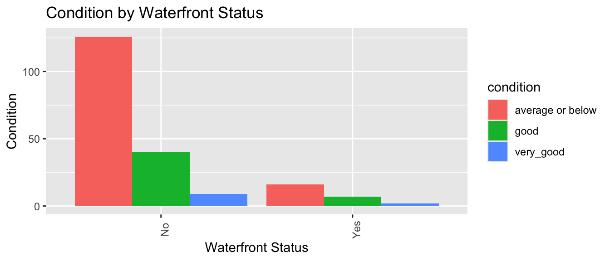
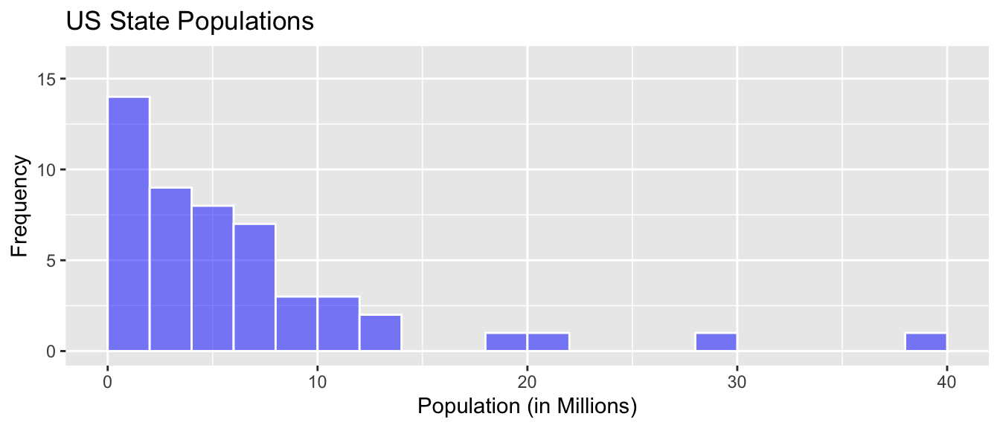
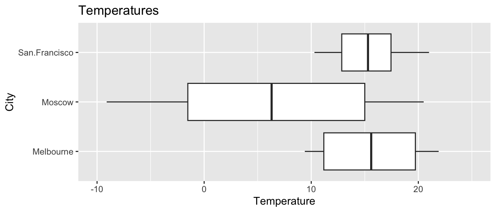
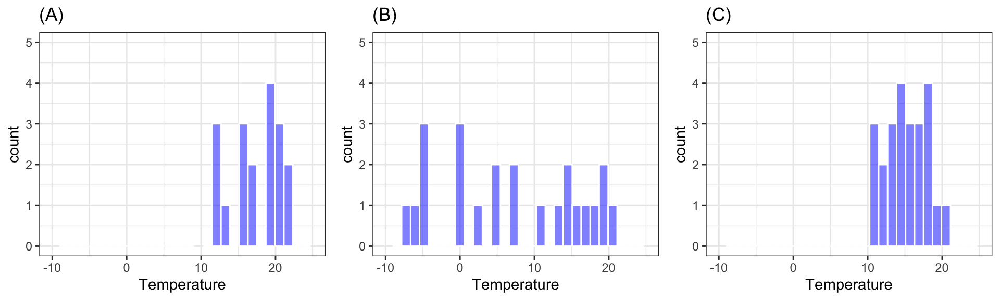
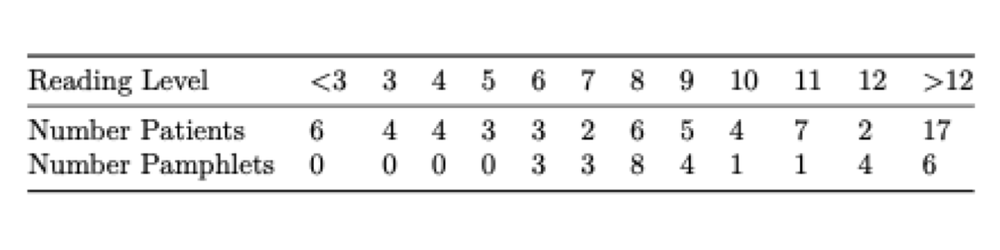
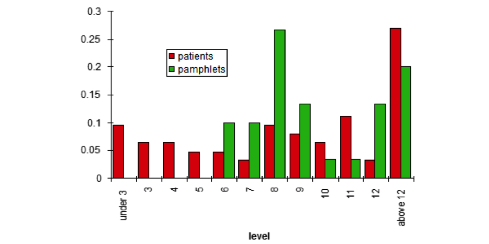
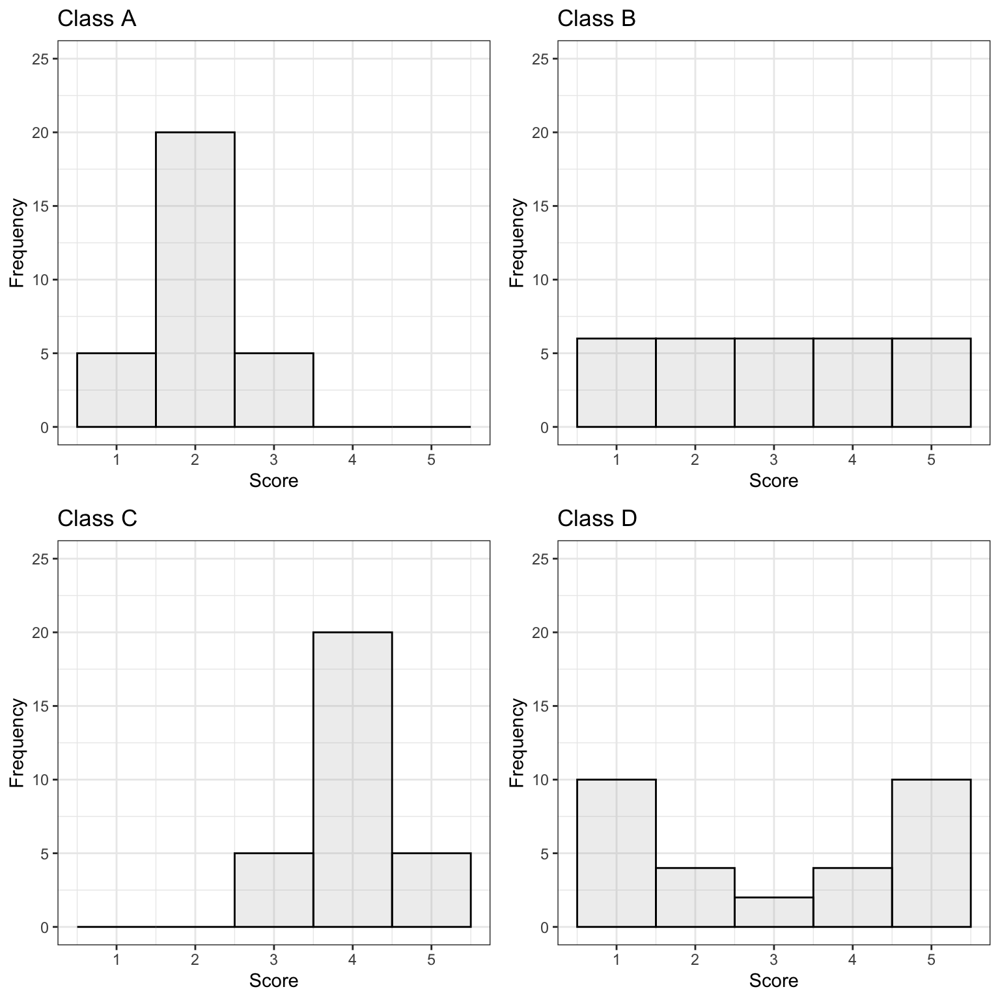

library(tidyverse)1 Visualizing and Summarizing Data
Learning Outcomes
Conceptual Learning Outcomes
1. Interpret and draw connections between data graphics (histogram, density plot, box plot, violin plot, scatterplot, bar graph) and summary statistics (mean, median, standard deviation, and IQR).
Computational Learning Outcomes
A. Calculate summary statistics R.
B. Create data visualizations in R.
C. Create reproducible reports in R.*
D. Use GitHub for version control.*
- Computational learning outcomes C and D will be emphasized throughout the course. Outcomes A and B especially pertain to Chapter 1, but will also be used throughout the course.
1.1 Getting Started in R
We’ll work with data on houses that sold in King County, WA, (home of Seattle) between 2014 and 2015.
We begin by loading the tidyverse package which can be used to create professional data graphics and summaries.
1.1.1 Previewing the Data
head()
The head() function displays the first 5 rows of the dataset.
head(Houses)# A tibble: 6 × 9
ID price sqft_living waterfront condition sqft_lot bedrooms bathrooms
<int> <dbl> <dbl> <chr> <fct> <dbl> <dbl> <dbl>
1 90 335. 1030 No average or bel… 1066 2 1.75
2 126 1450. 2750 No average or bel… 17789 4 2.75
3 300 268. 1590 No average or bel… 11914 3 1.75
4 541 2125 5403 Yes good 24069 3 2.5
5 932 545 2520 No average or bel… 7863 5 2.5
6 1063 790. 2840 No good 11900 4 2.75
# ℹ 1 more variable: yr_built <dbl>The rows of the dataset are called observations. In this case, the observations are the houses.
The columns of the dataset, which contain information about the houses, are called variables.
glimpse
The glimpse() command shows the number of observations (rows), and the number of variables, (columns). We also see the name of each variable and its type. Variable types include
Categorical variables, which take on groups or categories, rather than numeric values. In R, these might be coded as logical
<logi>, character<chr>, factor<fct>and ordered factor<ord>.Quantitative variables, which take on meaningful numeric values. These include numeric
<num>, integer<int>, and double<dbl>.Date and time variables take on values that are dates and times, and are denoted
<dttm>
glimpse(Houses)Rows: 200
Columns: 9
$ ID <int> 90, 126, 300, 541, 932, 1063, 1147, 1313, 1535, 1715, 1718…
$ price <dbl> 335.00, 1450.00, 267.50, 2125.00, 545.00, 790.00, 510.00, …
$ sqft_living <dbl> 1030, 2750, 1590, 5403, 2520, 2840, 1860, 2590, 1620, 3120…
$ waterfront <chr> "No", "No", "No", "Yes", "No", "No", "No", "No", "No", "No…
$ condition <fct> average or below, average or below, average or below, good…
$ sqft_lot <dbl> 1066, 17789, 11914, 24069, 7863, 11900, 3658, 9530, 7560, …
$ bedrooms <dbl> 2, 4, 3, 3, 5, 4, 3, 4, 4, 4, 2, 4, 3, 4, 3, 5, 3, 2, 4, 2…
$ bathrooms <dbl> 1.75, 2.75, 1.75, 2.50, 2.50, 2.75, 2.50, 2.50, 1.75, 3.25…
$ yr_built <dbl> 2006, 1914, 1957, 1976, 1981, 1961, 1994, 1978, 1947, 2005…There are 200 houses in the dataset, and 9 variables on each house.
summary
summary displays the mean, minimum, first quartile, median, third quartile, and maximum for each numeric variable, and the number of observations in each category, for categorical variables.
summary(Houses) ID price sqft_living waterfront
Min. : 90 Min. : 105.0 Min. : 700 Length:200
1st Qu.: 5162 1st Qu.: 329.5 1st Qu.:1498 Class :character
Median :10490 Median : 457.8 Median :2100 Mode :character
Mean :10743 Mean : 710.2 Mean :2316
3rd Qu.:15605 3rd Qu.: 748.8 3rd Qu.:2815
Max. :21536 Max. :4500.0 Max. :7620
condition sqft_lot bedrooms bathrooms
average or below:142 Min. : 720 Min. :1.000 Min. :0.500
good : 47 1st Qu.: 5000 1st Qu.:3.000 1st Qu.:1.750
very_good : 11 Median : 8236 Median :3.000 Median :2.500
Mean : 14093 Mean :3.335 Mean :2.246
3rd Qu.: 12258 3rd Qu.:4.000 3rd Qu.:2.500
Max. :215186 Max. :5.000 Max. :5.500
yr_built
Min. :1901
1st Qu.:1955
Median :1978
Mean :1974
3rd Qu.:1998
Max. :2014 1.1.2 Modifying the Data
Selecting Columns
If the dataset contains a large number of variables, narrow down to the ones you are interested in working with. This can be done with the select() command. If there are not very many variables to begin with, or you are interested in all of them, then you may skip this step.
Let’s create a smaller version of the dataset, with only the columns ID, price, sqft_living, and waterfront. We’ll call this Houses_3var.
Houses_4var <- Houses |> select(ID, price, sqft_living, waterfront)
head(Houses_4var)# A tibble: 6 × 4
ID price sqft_living waterfront
<int> <dbl> <dbl> <chr>
1 90 335. 1030 No
2 126 1450. 2750 No
3 300 268. 1590 No
4 541 2125 5403 Yes
5 932 545 2520 No
6 1063 790. 2840 No Filtering by Row
The filter() command narrows a dataset down to rows that meet specified conditions.
We’ll filter the data to include only houses built after 2000.
New_Houses <- Houses |> filter(yr_built>=2000)
head(New_Houses)# A tibble: 6 × 9
ID price sqft_living waterfront condition sqft_lot bedrooms bathrooms
<int> <dbl> <dbl> <chr> <fct> <dbl> <dbl> <dbl>
1 90 335. 1030 No average or bel… 1066 2 1.75
2 1715 799 3120 No average or bel… 5000 4 3.25
3 2445 3278. 6840 Yes average or bel… 10000 2 1.75
4 2627 4500. 6640 Yes average or bel… 40014 5 5.5
5 2748 726 2970 No average or bel… 10335 5 3
6 2878 195 1180 No average or bel… 2553 2 2
# ℹ 1 more variable: yr_built <dbl>Now, we’ll filter the data to include only houses on the waterfront.
New_Houses <- Houses |> filter(waterfront == "Yes")
head(New_Houses)# A tibble: 6 × 9
ID price sqft_living waterfront condition sqft_lot bedrooms bathrooms
<int> <dbl> <dbl> <chr> <fct> <dbl> <dbl> <dbl>
1 541 2125 5403 Yes good 24069 3 2.5
2 2141 1700 2500 Yes very_good 15250 5 2
3 2445 3278. 6840 Yes average or bel… 10000 2 1.75
4 2627 4500. 6640 Yes average or bel… 40014 5 5.5
5 4219 1875 3280 Yes average or bel… 29111 3 2.5
6 4487 2000 4580 Yes average or bel… 4443 5 4
# ℹ 1 more variable: yr_built <dbl>Next we’ll look at how to manipulate the data and create new variables.
Adding a New Variable
We can use the mutate() function to create a new variable based on variables already in the dataset.
Let’s add a variable giving the age of the house, as of 2015.
Houses <- Houses |> mutate(age = 2015-yr_built)
head(Houses) |> select(ID, price, sqft_living, waterfront, condition, yr_built, age)# A tibble: 6 × 7
ID price sqft_living waterfront condition yr_built age
<int> <dbl> <dbl> <chr> <fct> <dbl> <dbl>
1 90 335. 1030 No average or below 2006 9
2 126 1450. 2750 No average or below 1914 101
3 300 268. 1590 No average or below 1957 58
4 541 2125 5403 Yes good 1976 39
5 932 545 2520 No average or below 1981 34
6 1063 790. 2840 No good 1961 541.2 Summary Statistics
1.2.1 Measures of Center
Common ways to characterize the center of a distribution include mean, median, and mode.
For a set of \(n\) values \(y_i, \ldots, y_n\):
mean (\(\bar{y}\)) represents the numerical average and is calculated by \(\bar{y} =\frac{1}{n}\displaystyle\sum_{i=1}^n y_i\).
median represents the middle number when the values are arranged from least to greatest. If there are an even number of values in the dataset, then the median is given by the average of the middle two numbers.
The median of the upper half of the values is called the upper (or 3rd) quartile. This represents the 75th percentile in the distribution.
The median of the lower half of the values is called the lower (or 1st) quartile. This represents the 25th percentile in the distribution.
mode is the most frequently occurring number in the data.
1.2.2 Measures of Spread
Common ways of measuring the amount of spread, or variability, in a variable include:
range: the difference between the maximum and minimum values
interquartile range: the difference between the upper and lower quartiles (i.e. the range of the middle 50% of the values).
standard deviation (\(s\)): standard deviation is approximately the average deviation between an observation and the mean. It is calculated by
\(s =\sqrt{\displaystyle\sum_{i=1}^n \frac{(y_i-\bar{y})^2}{n-1}}\).
The square of the standard deviation, called the variance is denoted \(s^2\).
1.2.3 Calcularing Summary Statistics in R
Let’s calculate the mean, median, and standard deviation, in prices.
Houses_Summary <- Houses |> summarize(Mean_Price = mean(price, na.rm=TRUE),
Median_Price = median(price, na.rm=TRUE),
StDev_Price = sd(price, na.rm = TRUE),
Number_of_Houses = n())
Houses_Summary# A tibble: 1 × 4
Mean_Price Median_Price StDev_Price Number_of_Houses
<dbl> <dbl> <dbl> <int>
1 710. 458. 679. 200Notes:
1. The n() command calculates the number of observations.
2. The na.rm=TRUE command removes missing values, so that summary statistics can be calculated. It’s not needed here, since this dataset doesn’t include missing values, but if the dataset does include missing values, you will need to include this, in order to do the calculation.
The kable() function in the knitr() package creates tables with professional appearance.
library(knitr)
kable(Houses_Summary)| Mean_Price | Median_Price | StDev_Price | Number_of_Houses |
|---|---|---|---|
| 710.1975 | 457.8125 | 678.6034 | 200 |
1.2.4 Grouped Summaries
group_by()
The group_by() command allows us to calculate summary statistics, with the data broken down by by category.We’ll compare waterfront houses to non-waterfront houses.
Houses_Grouped_Summary <- Houses |> group_by(waterfront) |>
summarize(Mean_Price = mean(price, na.rm=TRUE),
Median_Price = median(price, na.rm=TRUE),
StDev_Price = sd(price, na.rm = TRUE),
Number_of_Houses = n())
kable(Houses_Grouped_Summary)| waterfront | Mean_Price | Median_Price | StDev_Price | Number_of_Houses |
|---|---|---|---|---|
| No | 552.6609 | 430 | 409.7904 | 175 |
| Yes | 1812.9540 | 1700 | 1073.8480 | 25 |
We see that waterfront house tend to be more expensive, on average, and also have more variability (higher standard deviation) in price than non-waterfront houses.
1.3 Data Visualization
Next, we’ll create graphics to help us visualize the distributions and relationships between variables. We’ll use the ggplot() function, which is part of the tidyverse package.
1.3.1 Histogram
Histograms are useful for displaying the distribution of a single quantitative variable. In a histogram, the x-axis breaks the variable into ranges of values, and the y-axis displays the number of observations with a value falling in that category (frequency).
General Template for Histogram
ggplot(data=DatasetName, aes(x=VariableName)) +
geom_histogram(fill="colorchoice", color="colorchoice") +
ggtitle("Plot Title") +
xlab("x-axis label") +
ylab("y-axis label")Histogram of House Prices
ggplot(data=Houses, aes(x=price)) +
geom_histogram(fill="lightblue", color="white") +
ggtitle("Distribution of House Prices") +
xlab("Price (in thousands)") +
ylab("Frequency")We see that the distribution of house prices is right-skewed. Most houses cost less than $1,000,000, though there are a few houses that are much more expensive. The most common price range is around $400,000 to $500,000.
1.3.2 Density Plot
Density plots show the distribution for a quantitative variable price. Scores can be compared across categories, like whether or not the house is on a waterfront.
General Template for Density Plot
ggplot(data=DatasetName, aes(x=QuantitativeVariable,
color=CategoricalVariable, fill=CategoricalVariable)) +
geom_density(alpha=0.2) +
ggtitle("Plot Title") +
xlab("Axis Label") +
ylab("Frequency") alpha, ranging from 0 to 1 dictates transparency.
Density Plot of House Prices
ggplot(data=Houses, aes(x=price, color=waterfront, fill=waterfront)) +
geom_density(alpha=0.2) +
ggtitle("Distribution of Prices") +
xlab("House price (in thousands)") +
ylab("Frequency") We see that on average, houses on the waterfront tend to be more expensive and have a greater price range than houses not on the waterfront.
1.3.3 Boxplot
Boxplots can be used to compare a quantitative variable with a categorical variable. The middle 50% of observations are contained in the “box”, with the upper and lower 25% of the observations in each tail.
General Template for Boxplot
ggplot(data=DatasetName, aes(x=CategoricalVariable,
y=QuantitativeVariable)) +
geom_boxplot() +
ggtitle("Plot Title") +
xlab("Variable Name") + ylab("Variable Name") You can make the plot horizontal by adding + coordflip(). You can turn the axis text vertical by adding theme(axis.text.x = element_text(angle = 90)).
Boxplot Comparing Price by Waterfront Status
ggplot(data=Houses, aes(x=waterfront, y=price)) + geom_boxplot() +
ggtitle("House Price by Waterfront Status") +
xlab("Waterfront") + ylab("Price (in thousands)") + coord_flip()
For houses not on the waterfront, the median price is about $400,000, and the middle 50% of prices range from about $300,000 to $700,000.
For waterfront houses, the median price is about $1,700,000, and the middle 50% of prices range from about $900,000 to $2,200,000.
1.3.4 Violin Plot
Violin plots are an alternative to boxplots. The width of the violin tells us the density of observations in a given range.
General Template for Violin Plot
ggplot(data=DatasetName, aes(x=CategoricalVariable, y=QuantitativeVariable,
fill=CategoricalVariable)) +
geom_violin() +
ggtitle("Plot Title") +
xlab("Variable Name") + ylab("Variable Name") Violin Plot Comparing Prices by Waterfront
ggplot(data=Houses, aes(x=waterfront, y=price, fill=waterfront)) +
geom_violin() +
ggtitle("Price by Waterfront Status") +
xlab("Waterfront") + ylab("Price (in thousands)") +
theme(axis.text.x = element_text(angle = 90))Again, we see that houses on the waterfront tend to be more expensive than those not on the waterfront, and have a wider range in prices.
1.3.5 Scatterplot
Scatterplots are used to visualize the relationship between two quantitative variables.
Scatterplot Template
ggplot(data=DatasetName, aes(x=QuantitativeVariable, y=QuantitativeVariable)) +
geom_point() +
ggtitle("Plot Title") +
ylab("Axis Label") +
xlab("Axis Label")Scatterplot Comparing Price and Square Feet of Living Space
ggplot(data=Houses, aes(x=sqft_living, y=price)) +
geom_point() +
ggtitle("Price and Living Space") +
ylab("Price (in thousands)") +
xlab("Living Space in sq. ft. ")We see that there is an upward trend, indicating that houses with more living space tend to, on average, be higher priced than those with less living space. The relationship appears to be roughly linear, though there might be some curvature, as living space gets very large. There are some exceptions to this trend, most notably a house with more than 7,000 square feet, priced over $1,500,000.
We can also add color, size, and shape to the scatterplot to display information about other variables.
We’ll use color to illustrate whether the house is on the waterfront, and size to represent the square footage of the entire lot (including the yard and the house).
ggplot(data=Houses,
aes(x=sqft_living, y=price, color=waterfront, size=sqft_lot)) +
geom_point() +
ggtitle("Price of King County Houses") +
ylab("Price (in thousands)") +
xlab("Living Space in sq. ft. ")
We notice that many of the largest and most expensive houses are on the waterfront.
1.3.6 Bar Graph
Bar graphs can be used to visualize one or more categorical variables. A bar graph is similar to a histogram, in that the y-axis again displays frequency, but the x-axis displays categories, instead of ranges of values.
Bar Graph Template
ggplot(data=DatasetName, aes(x=CategoricalVariable)) +
geom_bar(fill="colorchoice",color="colorchoice") +
ggtitle("Plot Title") +
xlab("Variable Name") +
ylab("Frequency") Bar Graph by Condition
ggplot(data=Houses, aes(x=condition)) +
geom_bar(fill="lightblue",color="white") +
ggtitle("Number of Houses by Condition") +
xlab("Condition") +
ylab("Frequency") +
theme(axis.text.x = element_text(angle = 90))We see that the majority of houses are in average or below condition. Some are in good or very good condition, while a few are in very good condition.
1.3.7 Stacked and Side-by-Side Bar Graphs
Stacked Bar Graph Template
ggplot(data = DatasetName, mapping = aes(x = CategoricalVariable1,
fill = CategoricalVariable2)) +
stat_count(position="fill") +
theme_bw() + ggtitle("Plot Title") +
xlab("Variable 1") +
ylab("Proportion of Variable 2") +
theme(axis.text.x = element_text(angle = 90)) Stacked Bar Graph Example
The stat_count(position="fill") command creates a stacked bar graph, comparing two categorical variables. Let’s explore whether waterfront status is related to condition.
ggplot(data = Houses, mapping = aes(x = waterfront, fill = condition)) +
stat_count(position="fill") +
theme_bw() + ggtitle("Condition by Waterfront Status") +
xlab("Waterfront Status") +
ylab("Condition") +
theme(axis.text.x = element_text(angle = 90)) We see that a slightly higher proportion of waterfront houses are in good or very condition than non-waterfront houses.
Side-by-side Bar Graph Template
We can create a side-by-side bar graph, using position=dodge.
ggplot(data = DatasetName, mapping = aes(x = CategoricalVariable1,
fill = CategoricalVariable2)) +
geom_bar(position = "dodge") +
ggtitle("Plot Title") +
xlab("Genre") +
ylab("Frequency") Side-by-side Bar Graph Example
ggplot(data = Houses, mapping = aes(x = waterfront, fill = condition)) +
geom_bar(position = "dodge") +
ggtitle("Condition by Waterfront Status") +
xlab("Waterfront Status") +
ylab("Condition") +
theme(axis.text.x = element_text(angle = 90)) 
The side by side bar graph conveys similar information to the stacked bar graph. It has the advantage of letting us see how many houses are in each category. We can tell that there are far more non-waterfront houses than waterfront ones. On the other hand, it is harder to compare the ratio of average, good, and very good houses with a side-by-side bar graph than it is with a stacked bar graph.
1.3.8 Correlation Plot
Correlation plots can be used to visualize relationships between quantitative variables. Correlation is a number between -1 and 1, describing the strength of the linear relationship between two variables. Variables with strong positive correlations will have correlation close to +1, while variables with strong negative correlations will have correlations close to -1. Variables with little to no relationship will have correlation close to 0.
The cor() function calculates correlations between quantitative variables. We’ll use select_if to select only numeric variables. The `use=“complete.obs” command tells R to ignore observations with missing data.
cor(select_if(Houses, is.numeric), use="complete.obs") |> round(2) ID price sqft_living sqft_lot bedrooms bathrooms yr_built age
ID 1.00 0.05 0.06 0.02 -0.07 0.11 0.21 -0.21
price 0.05 1.00 0.79 0.16 0.28 0.60 0.09 -0.09
sqft_living 0.06 0.79 1.00 0.36 0.47 0.72 0.27 -0.27
sqft_lot 0.02 0.16 0.36 1.00 0.14 0.17 0.00 0.00
bedrooms -0.07 0.28 0.47 0.14 1.00 0.48 0.07 -0.07
bathrooms 0.11 0.60 0.72 0.17 0.48 1.00 0.42 -0.42
yr_built 0.21 0.09 0.27 0.00 0.07 0.42 1.00 -1.00
age -0.21 -0.09 -0.27 0.00 -0.07 -0.42 -1.00 1.00The corrplot() function in the corrplot() package provides a visualization of the correlations. Larger, thicker circles indicate stronger correlations.
library(corrplot)
Corr <- cor(select_if(Houses, is.numeric), use="complete.obs")
corrplot(Corr)We see that price has a strong positive correlation with square feet of living space, and is also positively correlated with number of bedrooms. Living space, bedrooms, and bathrooms are also positively correlated, which makes sense, since we would expect bigger houses to have more bedrooms and bathrooms. Price does not show much correlation with the other variables. We notice that square feet of living space is negatively correlated with age, which means older houses tend to be smaller than newer ones. Not surprisingly, age is very strongly correlated with year built.
1.3.9 Scatterplot Matrix
A scatterplot matrix is a grid of plots. It can be created using the ggpairs() function in the GGally package.
The scatterplot matrix shows us:
- Along the diagonal are density plots for quantitative variables, or bar graphs for categorical variables, showing the distribution of each variable.
- Under the diagonal are plots showing the relationships between the variables in the corresponding row and column. Scatterplots are used when both variables are quantitative, bar graphs are used when both variables are categorical, and boxplots are used when one variable is categorical, and the other is quantitative.
- Above the diagonal are correlations between quantitative variables.
Including too many variables can make these hard to read, so it’s a good idea to use select to narrow down the number of variables.
library(GGally)
ggpairs(Houses |> select(price, sqft_living, condition, age))The scatterplot matrix is useful for helping us notice key trends in our data. However, the plot can hard to read as it is quite dense, especially when there are a large number of variables. These can help us look for trends from a distance, but we should then focus in on more specific plots.
1.4 Practice Questions
1)
The Coasters dataset contains information on roller coasters around the world. More information about the variables are available here.
| Coaster | State | Type | Height | Speed | Inversions | Duration | Opened | AgeGroup |
|---|---|---|---|---|---|---|---|---|
| Top Thrill Dragster | OH | Steel | 128 | 194 | No | 30 | 2003 | Newest |
| Superman The Escape | CA | Steel | 126 | 162 | No | 28 | 1997 | Newer |
| Millennium Force | OH | Steel | 94 | 151 | No | 140 | 2000 | Newest |
| Titan | TX | Steel | 75 | 138 | No | 210 | 2001 | Newest |
| Silver Star | D | Steel | 73 | 127 | No | 240 | 2002 | Newest |
| Goliath | CA | Steel | 72 | 138 | No | 180 | 2000 | Newest |
- What are the observations in the dataset? What are the variables?
- State whether each variable is categorical or quantitative.
2)
The graphic shows the distribution of US state populations in 2015.

a)
A common mistake among introductory statistics students is to say that the largest state population is 14 million. Why might someone think this? Why is it incorrect?
b)
Approximately what is the median state population?
c)
How will the mean state population compare to the median?
d)
How many states had populations under 10 million?
3)
The following histograms and boxplots provide information on the average monthly temperatures, in degrees Celsius, for the 24 months in 2015-16, in the cities of Moscow (Russia), Melbourne (Australia), and San Francisco (United States). Use the graphs to answer the following questions.

a)
Approximately what was the median monthly temperature in each city?
b)
Approximately what is the range of the middle 50% of monthly temperatures in San Francisco?
c)
Approximately what percentage of monthly temperatures in Moscow were below freezing (0 deg. Celsius)?
d)
Which of these cities would you expect to have the largest standard deviation among temperatures? Which would you expect to have the smallest standard deviation? Explain your answer in a way that makes clear that you understand what standard deviation represents in this context.
e)
How would the mean monthly temperature in Melbourne compare to the median temperature? Would it be substantially higher, substantially lower, or about the same? Explain your answer.
f)
Shown below are histograms of temperatures in each of the three cities. State which histogram corresponds to each city.

4)
The American Cancer Society and National Cancer Institute distribute pamphlets to inform patients with cancer abut the nature of the disease and possible treatments. It is important that pamphlets be written at a reading level that patients will be able to understand.
The data represent reading levels of 63 adult cancer patients at the Philadelphia Veterans Affairs Medical Center, and the reading levels of 30 pamphlets available to them. (Source:https://ww2.amstat.org/publications/jse/v3n2/datasets.short.html)

The graph shows reading levels of patients and pamphlets along the horizontal axis and proportion of patients or pamphlets of that level on the vertical axis.

a)
What is the median reading level among the cancer patients? What is the median reading level of the pamphlets?
b)
How would the standard deviation in patients’ reading levels compare to the standard deviation in the pamphlet levels?
c)
Are pamphlets being written at the appropriate reading levels? Justify your answer.
5)
One person stands outside the Warch Center (Lawrence University’s Student Center) at noon on a Monday and records the ages of every fifth person who walks in. Another person does the same thing at the Appleton airport. Which location is likely to have the larger mean age? Which is likely to have a larger standard deviation in age?
6)
For each of the following, state whether the mean or median would likely be greater, or whether they would likely be about the same. Explain your reasoning.
a)
distribution of house prices in Wisconsin
b)
distribution of heights of women in United States
c)
distribution of age at time of death in United States
7)
A dataset contains the following numbers:
3, 35, 37, 38, 41, 45, 46, 49, 52
After inspecting the data, the recorder realizes there is a typo and the 3 is supposed to be a 33. How will the following statistics change when the typo is fixed (will they increase, decrease, or stay the same)?
a)
Mean
b)
Median
c)
IQR
d)
Standard Deviation
8)
The histograms show the distribution of quiz scores in four different statistics classes.

The following questions can be answered based on information in the graphs, without actually calculating mean or standard deviation from the formulas.
a)
Rank the classes from highest mean score to lowest. If any classes are tied, say this.
b)
Would the median score differ from the mean for any of the classes? If so, which one(s)?
c)
Rank the classes from highest standard deviation in scores to lowest. If any classes are tied, say this.
9)
Suppose that a city is interested in estimating average household size among its residents. The city considers two different approaches for conducting this study.
Approach 1: Select a random sample of 100 people and ask each person how many people live in their household.
Approach 2: Select a random sample of 100 households and ask one person from each household how many people live in the household?
How will mean household size estimates will compare for the two approaches? Will one approach yield a larger estimate of household size? Why or why not?